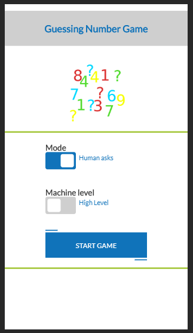
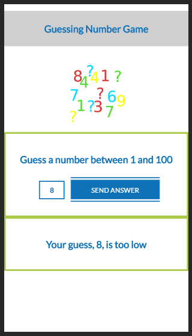
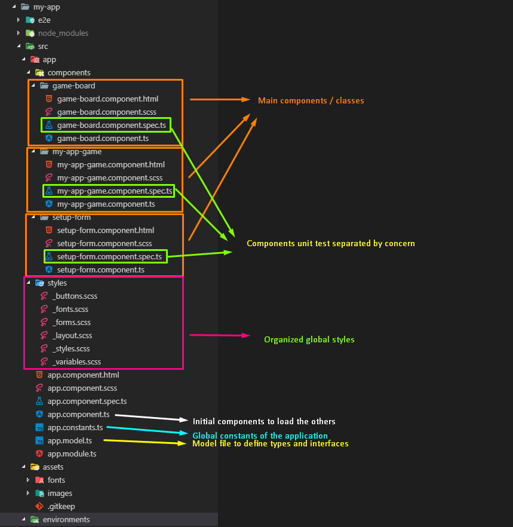

Guessing Number Game 1.0.0
Author: José Antonio Jaramago Lozano.
Installation 1
Requirements 1
Installation Order 1
Description 1
General Design 4
Main components 5
Language 6
Styles 6
Installation
Requirements
- node v10.15.3
- Angular CLI 7.3.8
Installation Order
Description
Guessing Number Game is an Angular based application where the user can choose between two game modes.
- Machine Asks mode: The machine generates a random number between 1 and 100, after that, the player enter a numbers trying to guess the number generated by the machine.
For each entered number, the machine will answer whether the guessed number is too high or too low.
The game will be finished when the entered number is equal to the generated by the machine. - Human Asks mode: In this game mode, the human thinks of a number and the machine will try to guess it.
There are two levels for this mode:
- Random: The machine will guess the number randomly according to the limit that the player indicates.
- High: The guessed numbers by the machine will be the arithmetic average of the established limits. It will increase the probability of guessing sooner the right number.

General Design
Guessing Number Game ( GNG in advance ) is an Angular7 SPA which relies on a module based design.
The application consists basically in three main classes / component, and they have been organized following a separation by concern.
The advantages of using this organization are:
- It makes each part of the application simple and fast to locate.
- Keep a flat folder structure.
- Try not to repeat parts of the application.
- Keep a highly scalable structure.
In this way the approach for the app folder structure will be as follows:

Main components
The SPA contains three main components where relies the most of our application.
- SetupFormComponent: This component is loaded at the beginning of the game. It handles the game mode and the level of the game in case of “Human Asks mode” were chosen.
- GameBoardComponent: Here relies all the logic of the game in playing time. It handles the game flow as much as the game state in each moment.
- MyAppGameComponent: This class handles the communication between both of the other components.
The communication has been implemented through events emissions and subscriptions.
Due to the simplicity of the requirements other options of communication as stores or services has been dismissed.
Language
Taking advance of the Angular framework features, the language used for the implementation has been Typescript. It allows us to build a typed application, provided of a more robust maintainable code.
GNG specific types and interfaces has been created in the app.model.ts file.
Styles
For the layout of this application, any framework has been used and the styles for the whole SPA have been entirely from scratch created.
The styles have been created following a RWD making use of CSS flexbox. Due to the simplicity of the UI no grid nor media query has been required.
Each component has its own style sheet, but in this case, considering that the whole UI had to be from scratch built, the majority of the styles have been globally applied.
In order to keep an organized styles structure, they have been separated in files according to the their concern.
It exists also a variables.scss file where the colour pallete of the application has been defined.